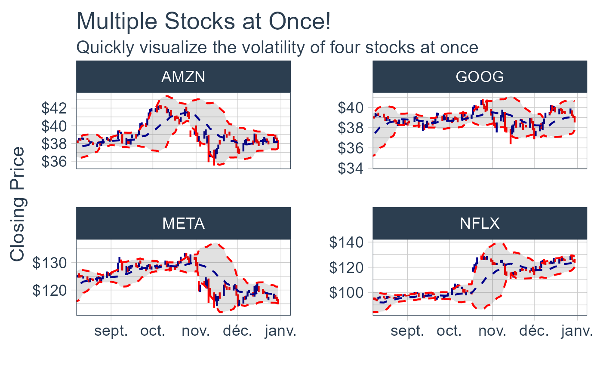
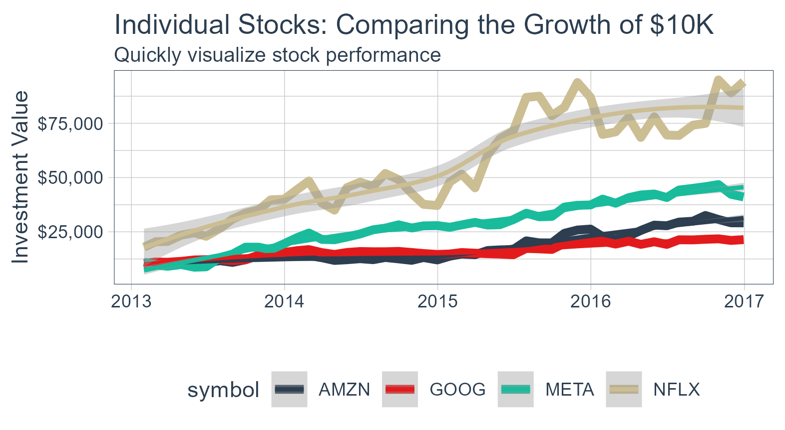
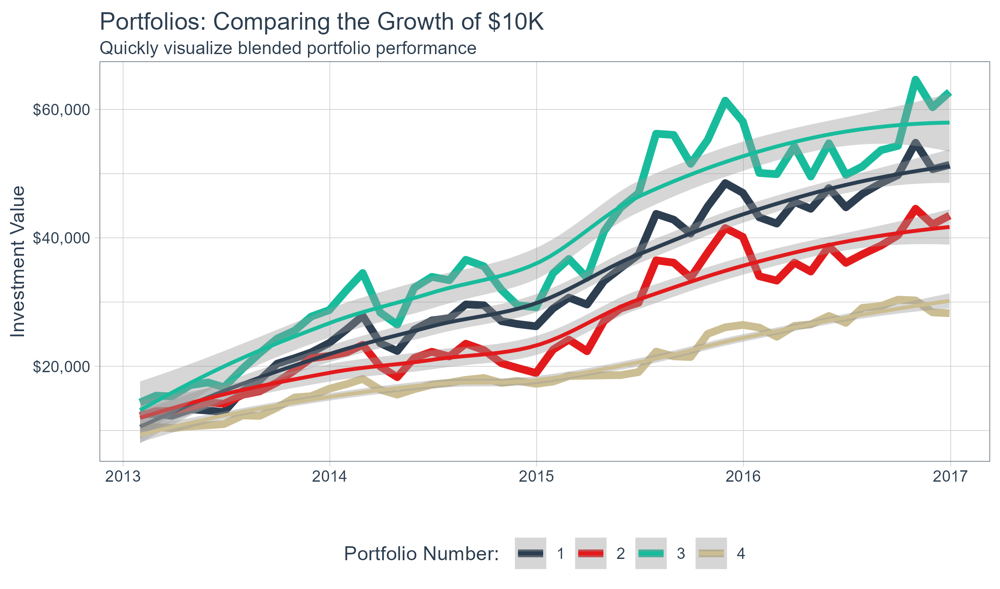

Bringing financial and business analysis to the tidyverse

Features of Tidyquant
tidyquant integrates the best resources for collecting and analyzing financial data, zoo, xts, quantmod, TTR, and PerformanceAnalytics, with the tidy data infrastructure of the tidyverse allowing for seamless interaction between each. You can now perform complete financial analyses in the tidyverse.
- A few core functions with a lot of power
- Integrates the quantitative analysis functionality of
zoo,xts,quantmod,TTR, and nowPerformanceAnalytics - Designed for modeling and scaling analyses using the the
tidyversetools in R for Data Science - Implements
ggplot2functionality for beautiful and meaningful financial visualizations - User-friendly documentation to get you up to speed quickly!
New Excel Functionality in tidyquant
- Excel in R - Pivot Tables, VLOOKUPs, and more: Details on the Excel integrations are covered in the blog article.
One-Stop Shop for Serious Financial Analysis
With tidyquant all the benefits add up to one thing: a one-stop shop for serious financial analysis!
Core Functions
Getting Financial Data from the web:
tq_get(). This is a one-stop shop for getting web-based financial data in a “tidy” data frame format. Get data for daily stock prices (historical), key statistics (real-time), key ratios (historical), financial statements, dividends, splits, economic data from the FRED, FOREX rates from Oanda.Manipulating Financial Data:
tq_transmute()andtq_mutate(). Integration for many financial functions fromxts,zoo,quantmod,TTRandPerformanceAnalyticspackages.tq_mutate()is used to add a column to the data frame, andtq_transmute()is used to return a new data frame which is necessary for periodicity changes.Performance Analysis and Portfolio Analysis:
tq_performance()andtq_portfolio(). The newest additions to thetidyquantfamily integratePerformanceAnalyticsfunctions.tq_performance()converts investment returns into performance metrics.tq_portfolio()aggregates a group (or multiple groups) of asset returns into one or more portfolios.
Comparing Stock Prices
Visualizing the stock price volatility of four stocks side-by-side is quick and easy…

Evaluating Stock Performance
What about stock performance? Quickly visualize how a $10,000 investment in various stocks would perform.

Evaluating Portfolio Performance
Ok, stocks are too easy. What about portfolios? With the PerformanceAnalytics integration, visualizing blended portfolios are easy too!
- Portfolio 1: 50% FB, 25% AMZN, 25% NFLX, 0% GOOG
- Portfolio 2: 0% FB, 50% AMZN, 25% NFLX, 25% GOOG
- Portfolio 3: 25% FB, 0% AMZN, 50% NFLX, 25% GOOG
- Portfolio 4: 25% FB, 25% AMZN, 0% NFLX, 50% GOOG

This just scratches the surface of tidyquant. Here’s how to install to get started.
Installation
Development Version with Latest Features:
# install.packages("devtools")
devtools::install_github("business-science/tidyquant")CRAN Approved Version:
install.packages("tidyquant")Further Information
The tidyquant package includes several vignettes to help users get up to speed quickly:
- TQ00 - Introduction to
tidyquant - TQ01 - Core Functions in
tidyquant - TQ02 - R Quantitative Analysis Package Integrations in
tidyquant - TQ03 - Scaling and Modeling with
tidyquant - TQ04 - Charting with
tidyquant - TQ05 - Performance Analysis with
tidyquant - Blog Article: Excel in R - Pivot Tables, VLOOKUPs, and more!
Want to Learn tidyquant?
-
-
Performance Analysis & Portfolio Optimization with
tidyquant- A 1-hour course ontidyquantin Learning Labs PRO
-
Performance Analysis & Portfolio Optimization with
-
-
Building an API with
plumber- Build a stock optimization API withplumberandtidyquant
-
Building an API with
-
-
Stock Portfolio Optimization and Nonlinear Programming - Use the
ROIpackage withtidyquantto calculate optimal minimum variance portfolios and develop an efficient frontier.
-
Stock Portfolio Optimization and Nonlinear Programming - Use the
-
- Shiny Financial Analysis with Tidyquant API & Excel Pivot Tables - Learn how to use the new Excel Functionality to make Pivot Tables, VLOOKUPs, Sum-If’s, and more!